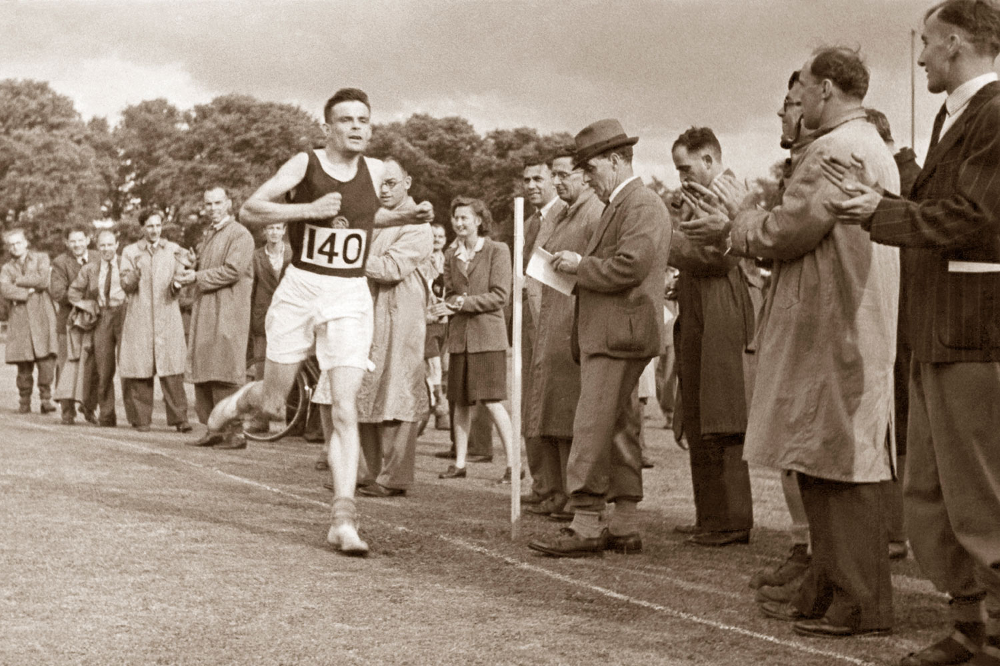

Alan Turing
The person that by his bounty you are now see this page on your screen.

The lonelieness of the long distance runner. Turing competing at school.
- 1912 - Alan Mathison Turing born in Maida Vale, London, to Ethel Sara Turere's timeline of ing (nee Stoney) and Julius Mathison Turing.
- 1918 - Alan joins St Michael's day school in Hastings, where he does not do very well. He is sent to Hazelhurst Preparatory School when he is ten where he does much better and learns to play chess.
- 1926 - Alan becomes a pupil at Sherborne School in Dorset. Alan is not interested in their traditional classical education as he really wants to spend his time doing Science and Mathematics
- 1927 - Alan becomes deeply interested in the work of Albert Einstein and is able to develop work done by Einstein based on a questioning of Newton's Laws of Motion.
- 1928-1930 Alan enters 6th form at Sherborne and becomes great friends with Christopher Morcom, another talented boy who loves Maths and Science. While they are applying for university, Christopher suddenly dies. Alan is devastated.
- 1931-1934 Alan becomes an undergraduate at King's College, Cambridge to study Mathematics. He enjoys university and is highly successful. He graduates with distinction.
- 1935 - Alan's work is so distinguished that he is elected Fellow of King's College, aged only 23.
- 1938 - Alan goes to Princeton University in America to study mathematics and is awarded a PhD.
- 1939 - September - Alan is asked to join the Government Codes and Ciphers School and arrives at Bletchley Park the day after war is declared.
- 1939-1940 With Gordon Welchman, Alan develops the Bombe, a device for decrypting the messages sent by the Germans using their Enigma machine.
- 1940-1942 During 1942, Alan and his colleagues also manage to break the more complicated German Naval Enigma system. This is a tremendous help to the Allies in the Battle of the Atlantic.
- 1943-1945 Alan is asked to work as a top level intelligence link with USA, which he visits to share information on cryptology (code-breaking).
- 1945 - At the end of the war, Alan Turing is awarded the OBE for his wartime services.
- 1946 - Alan joins the National Physical Laboratory, in Teddington and he publishes a paper with the first detailed design of a stored-program computer.
- 1948 - Alan is appointed as as Reader in the Mathematics Department of Manchester University.
- 1949 - Alan is made deputy director of the Computing Laboratory at Manchester University.
- 1950 - Alan publishes'Computing Machinery and Intelligence' in which he develops the Turing Test, an attempt to define a standard for a machine to be called intelligent. The paper will become very famous.
- 1951 - During his year, Alan is elected Fellow of the Royal Society FRS and also gives a talk about Artificial Intelligence on the BBC radio's Third Programme.
- 1952 - January - Alan is arrested for gross indecency and loses his security clearance. He is offered chemical treatment as an alternative to imprisonment. The hormone treatment has a very detrimental effect on him.
- 1954 - June 8th - Alan's body is found in his home in Wilmslow, Cheshire. The post-mortem finds that his death had been caused by poisoning. A half-eaten apple is found next to him laced with cyanide. His body is cremated at Woking crematorium.
Here's timeline of Alan Turing life
It is atrocious that we don't recognize this man and the only way to do so is to apologize to him. This man was a national treasure and we hounded him to his death... I'm looking for an apology from the British government because that's where I think the wrong was done. But Turing is clearly someone of international stature.
-- John Graham-Cumming, computer scientist